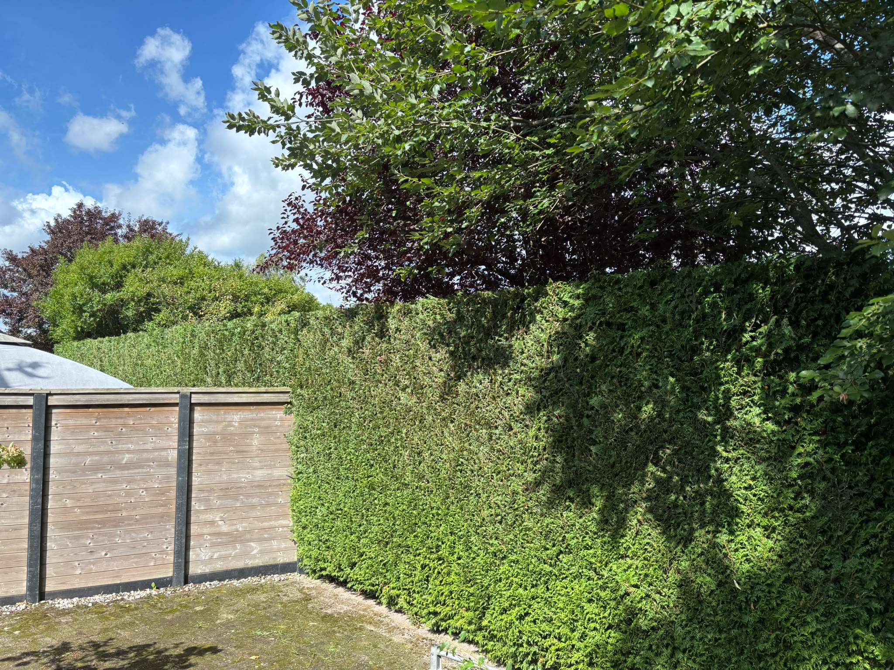

Snoeiwerk
Goed snoeiwerk zorgt voor gezonde groei, meer licht en een verzorgde uitstraling. Wij snoeien met aandacht voor de plant én voor het totaalbeeld van uw tuin.
De juiste snoei op het juiste moment.
Iedere haag, struik en plant vraagt om een eigen aanpak. Daarom bekijken we eerst de soort, conditie en gewenste vorm. Vervolgens snoeien we zorgvuldig en laten we de tuin netjes achter.
We helpen onder andere met het snoeien en terugbrengen van hagen, sierstruiken en overgroeide beplanting in Emmen en omgeving.
Voorbeelden van snoeiwerk
Hieronder laten we enkele voorbeelden zien van werkzaamheden en het eindresultaat.



Heeft uw tuin een goede snoeibeurt nodig?
Stuur een paar foto's en een korte omschrijving via WhatsApp. Dan kunnen we snel bekijken wat er nodig is.
 Vraag snoeiwerk aan
Vraag snoeiwerk aan